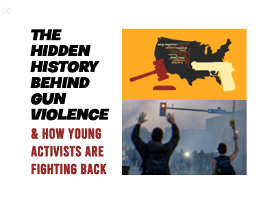
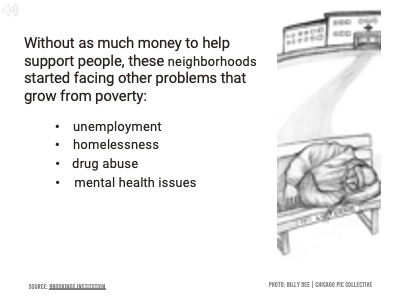
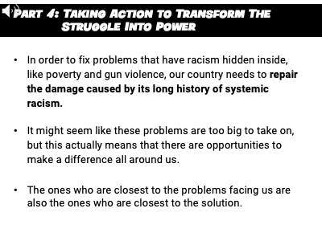
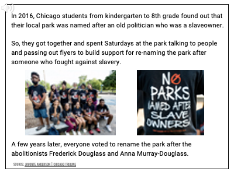

4 Study 1: The Participatory Process for Qualitative Investigation and Theory Development
4.1 Introduction
Study 1 describes the development of a novel intervention to reduce youth gun carrying. Building off of theories of adolescent motivation and behavior change, I created a brief intervention designed to leverage social, developmental, and psychological factors to reframe how youth interpret gun carrying, youth violence prevention services, and community activism. The intervention’s central message is that gun carrying perpetuates racial injustice in communities of color and that civic engagement is a true path to the respect young adolescents seek. I will present thematic analyses from qualitative interviews and discuss how the use of design-thinking and participatory methods for youth to meaningfully contribute to the design, implementation, and impact of research programs.
4.2 Current study
This study details the qualitative processes that informed the intervention development. I will describe the prominent themes that rose from interviews, focus groups, and informational campaigns from groups and individuals who are either impacted by gun violence or involved in organizing collective responses to gun violence and community issues. This study also includes pilot data from Chicago youth who received the pilot intervention material, answered survey questions, provided open-ended feedback, and engaged in re-designing the intervention material. These are my a priori theoretical assumptions that I seek to compare with youths’ experiences through qualitative investigation:
- Guns are carried as a form of safety.
- Gun carrying or proximity with gun carriers sends signals about social status or that otherwise deter threats to safety.
- Activists and community organizers advocating for racial justice are viewed positively. Specifically, that youth view them as appealing identities that are worthy of respect by high-status peers.
- Connecting youth to community advocacy organizations is a protective factor against exposure to gun violence, and social pressures to carry guns.
- Youth as young as 11 years old are exposed to and recognize the concepts of racism, social justice, and community gun violence.
- Youth value (a) asserting independence, (b) earning respect from their peers, (c) social justice, and (d) having a beyond-the-self impact on the world.
4.3 Methods
I will compare insights from focus groups, interviews, and design workshops with the a priori theoretical assumptions. I first recruited participants from ages 11 to 25 living in Chicago neighborhoods that have high rates of gun violence. After initial rounds of focus group sessions, I narrowed the eligibility to boys ages 11 to 15. I chose these criteria because gun carrying is more common among boys (Fontaine et al., 2018) and because gun carrying has been reported to begin as early as 10 years old (DuRant et al., 1999). In addition, the transition to middle school that coincides with the developmental shift to adolescence provides an opportunity to explore and adopt new identities in a new context, which impacts their behavioral trajectory. Strategies to promote positive habits can leverage the nuances of this transition to enable lasting behavioral changes.
4.3.1 Procedure
Participants were recruited through community organizations sharing physical and digital fliers to their networks. The study advertisements were titled “Make Your Voice Heard” and invited local youth ages 11 to 17 to a 1-hour group interview where students share their thoughts on community safety, gun violence prevention, racial justice, and youth activism for a $35 e-gift card compensation. During the sessions, I introduced the project goal of sharing the voices of young Chicagoans living in neighborhoods that are affected by gun violence to inform the policies and practices to promote community safety. At the end of each session, I invited the participants, parents/guardians, and other interested community members to join the project as expert consultants and co-designers who would be compensated for their time. After rounds of interviews and focus groups, I will host 1-3 workshop sessions in which the research team and participants will co-create an informational video about youth violence prevention that is told through a critical narrative. I will then evaluate the final product’s impact on youth attitudes and behaviors compared to a similar video that delivers a traditional youth violence prevention narrative.
4.3.1.1 Semi-structured focus group and interviews
Interviews and focus groups were done as an iterative process where I will seek (dis)confirming evidence of the theoretical assumptions by asking open-ended questions and looking for answers that converge towards a common theme. The interview guide included trauma-informed interviewing strategies to probe how participants interpret research materials to ensure it communicates the intended messages. I also explored how participants responded to the material to gather support for our expected outcome before implementing the intervention. I conducted focus groups and interviews using a protocol that included a script and guiding discussion questions. Sessions were held in person and over zoom to suit the participants’ availability.
Researchers introduced themselves and gave a brief 5-minute overview of the purpose of their visit and study goal. The introduction stressed the importance of participant privacy and confidentiality and asked participants not to reveal any identifying information while sharing their opinions and experiences.
I will transcribe audio recordings to conduct textual analyses to calculate the reliability of general themes and specific claims related to our assumptions. Research assistants will independently code text for prominent factors and themes. Based on these qualitative results, I will then update our working theory to align with the identified normative beliefs and motivations regarding gun violence.
4.3.1.2 Participatory youth program design workshops
I will also host participatory program design workshops where past participants and newly recruited participants will be invited to co-design the final treatment program. The resulting treatment material and its delivery procedure will be tested in single-day pilot workshops among small groups of 5 to 15 participants. The workshops will include hands-on activities regarding the program’s visual appeal, engagement, clarity, and overall persuasiveness and will ask participants to rate the final treatment and control materials on these factors.
In addition to the program material design, the sessions will include lessons about the research process and hold sessions to brainstorm ideal research designs and outcomes to measure. These sessions will also be a time to solicit feedback on the pilot measures I currently plan to include in Study 2.
4.3.2 Qualitative Analyses
Our research team
- In vivo coding for quotes to reduce researcher bias
- “Process coding for action-based codes; indicate movement or procedure (e.g., -ing words) to identify occurrences”. Often non-verbal. Examples include:
- storytelling
- engaging/not engaging
- “Descriptive coding condenses the data”; snapshot. “Use for non-textual or organizing data by topic area”
- “Structural coding; labeling and describing specific structural attributes of the data (who what where how) rather than actual topics; coding sections; useful for open-ended structured interview questions taht ask 5W’s” Examples include
- “Value-based coding relates to participants’ worldview; insight on values, attitudes, and beliefs; look for”I feel/think/need X; it’s important that X”; useful for cultural values and interpersonal experiences”
- Structural coding
- Descriptive coding
- In vivo coding
- Value coding
4.3.3 Material development
Discussion questions will center around participants’ attitudes and beliefs regarding gun violence in their community and pursuing civic engagement to help fight racial inequality. I aim to sketch the sociocultural setting of areas prone to gun violence, focusing on key factors that may leverage prosocial behavior. I will also ask participants to watch brief videos that explain how the criminal justice system disproportionately targets poor communities of color. Based on participant reactions from the first round, I will edit the videos or create new material that is at the appropriate reading level, excludes or clarifies confusing sections, and highlights sections that garnered the most interest.
4.3.3.1 Semi-structured focus group and interviews
I created the interview protocol based on literature from trauma-informed research methods, cultural competency, healing circles, participatory youth action research, racial socialization, and motivational interviewing. I also adjusted the protocol according to input from community partners and participant responses during qualitative data collection.
4.3.3.2 Critical intervention pilot
The pilot draft was designed with a priori assumptions informed by research from critical race studies, psychology, behavioral science, and sociology. I created a 20-min pilot program that creates a counter-space to traditional adultist approaches in societal decisions that directly impact youth without respecting youths’ expert knowledge on what it is like to live with the aftermath. The program engages youth about (1) how youth voices are an undervalued key to solving big societal problems, (2) the “hidden history” of how systemic racism created conditions for poverty and violence in many Black and Brown communities, and (3) (the hidden successes?) of local youth who have been building collective community power as a way to (fight back/take control over their narrative). A video of the current pilot intervention material is available at: https://youtu.be/31OU5Wx5xwM.


Figure 4.1: Pilot intervention material used in focus groups, interviews, and pilot testing, September 2022.


4.4 Preliminary Results
Insights from conversations with participants
Here are some insights from focus group and interview sessions with youth and young adult participants:
- Children as young as 7 are aware of and/or have experienced community gun violence. There’s often not someone to talk to about it.
- Some were taught how to say no by their parents. Not everyone has that.
- There is social pressure to join local gangs because there’s safety in numbers.
- Youth activities are severely limited by the lack of available local opportunities and the dangers of leaving the house.
- They want more sports and recreational activities.
- Middle schoolers are familiar with activism, but it often limited to awareness of the Black Lives Matter movement online. They are less aware of local community organizers and examples of successful campaigns.
- There is a general understanding of the government’s failure to take care of them, but not of specific topics related to critical race theory (e.g., Jim Crow laws, redlining).
- Learning about local youth activism is appealing and motivating.
- Female students are much more enthusiastic about racial justice work than male students
Insights from conversations with community organizers
Here are some insights from meetings and interviews with folks involved in community organizing, mutual aid, youth [civic engagement/activism]:
- Much violence comes from petty reasons about respect
- A cycle of retaliation and revenge draws out these small conflicts
Many youth-serving organizations offer a range of activities that directly relate to our message context, indirectly relate, or offer general positive supports. Rather than reinventing the wheel through a novel program, we can make our message goal to increase the appeal of joining community organizations, promote their services, and assist in scaffolding connections.
Here are examples the organizations and range of services they offer:
Austin
- Institute for Nonviolence Chicago (INVC)
- Case management and re-entry
- Victim support services
- Workforce development
North Lawndale
- North Lawndale Emsployment Network
- Career coaching and employment connections
- Job info sessions
- Job training, job placement, and post-employment support (Transportation, Distribution, and Logistics; Construction & Building Trades)
- Job training program for folks with a felony background
- Digital education
- Financial coaching
- Assist with home ownership and avoiding foreclosures
- Guests speakers and webinars (e.g., investing, building an emergency fund)
- Business solutions team
- Cafe for hosting events
- Leadership development (e.g., entrepreneurship training, financial literacy)
- Join LLC with locally grown and created skincare products
- Online Market Pickups
- Career coaching and employment connections
- The BLOC Chicago
- Boxing training
- Academic support
- Enrichment (field trips, college visits, photography, cooking, and more)
Englewood
- GKMC
- Youth-led activism
- [R.A.G.E. (Resident Association of Greater Englewood)]
- “Create tangible solutions and mobilize residents and resources to restore our community.”
- Assist with home ownership and avoiding foreclosures
- Raise awareness about community events and partners

4.5 Discussion
Challenges and Limitations
Online participant engagement
It was difficult to engage participants when I had zoom interviews with one or two people. So far in the zoom session, all participants had their videos off. I had my video one so they could see who they were talking on and be more welcoming, but often had to turn it off during the discussion due to weak internet connections. Some participants preferred to respond to questions over chat, which tended to be short. Participants who were talkative at first started primarily using chat soon after one person did. But even in these not-deal circumstances for engagement, participants expressed strong interest in the topics of study and our approach–particularly after viewing the pilot material.
In-person participant engagement
I experienced stronger engagement through in-person sessions, whether it was one-on-one or with a group. In group with more than 6 people, however, it was difficult to hear from all participants without putting social pressure on quieter participants to come out of their comfort zone. Participants who were a minority member in terms of gender or age in their particular focus group seemed to voice a response more hesitant to engage. For example, they might perk up and lean forward with something to say, but then fall back when others continued talking. When I explicitly made space for them to share, they would then briefly agree with whatever the group said and turn away. Altogether, the ideal discussion setup going forward may be groups of 3 to 5 members grouped in smaller age bins and by age.
Reducing researcher influence on participants’ responses
The critical, community-based, participatory nature of this project is reflected in our grounding theory of change, methods, and our team’s interactions with our partners and participants. For example, our protocol for introducing the study’s purpose and methods is embedded with critiques about traditional practices in research and policymaking. Being forthcoming with this positionality was important for connecting with communities that have been systematically harmed by these institutions in the past. To be held accountable to our stated goals and positions, the protocol included language and structures to provide psychologically safe pathways for community members and participants to provide critical feedback. Our script affirms the expertise of participants and community members on the main topics under study and criticizes how adults often make decisions that impact youth without asking for their side of the story. This disclosure is intended to build rapport and set the tone that our project spaces can be trusted to receive critiques of traditional.
In sessions that I personally led, I also shared how my experience as a first-generation citizen and college student felt like I got exclusive access to witness how often powerful institutions neglect perspectives from my community when discussing issues that impact directly them. I criticized this exclusionary practice and shared how I see similar patterns in Chicago, which is why our project seeks to hear from and collaborate with young Chicagoans to create a new type of community safety program that is for them, by them. The trade-off of being transparent about our (positionality/critical approach) in the early qualitative stages is that it risks influencing participants’ to agree with the researchers’ a priori hypothesis that critical narratives are more engaging to youth. Given the uphill battle of community outreach and participant recruitment, I decided that benefits outweighed the potential costs. To control for this concern, I could analyze the relationships between the presence, order, and speaker of critical statements, along with the rate of affirming or disaffirming responses.